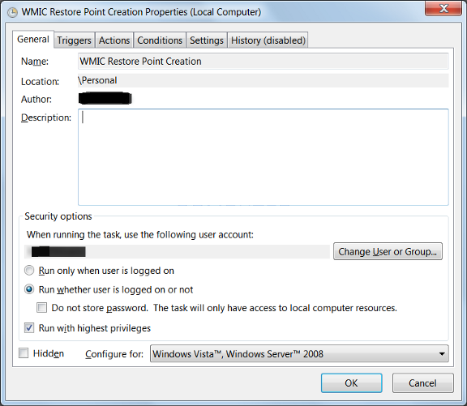
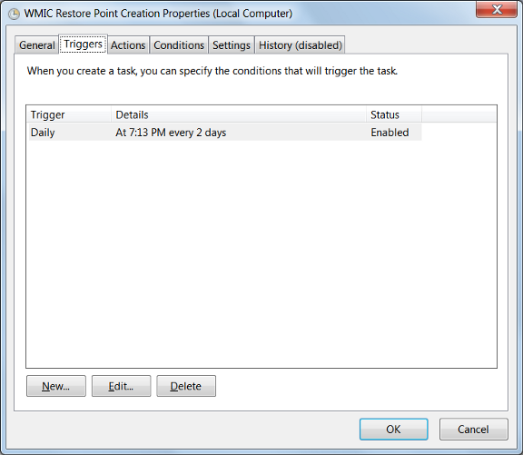
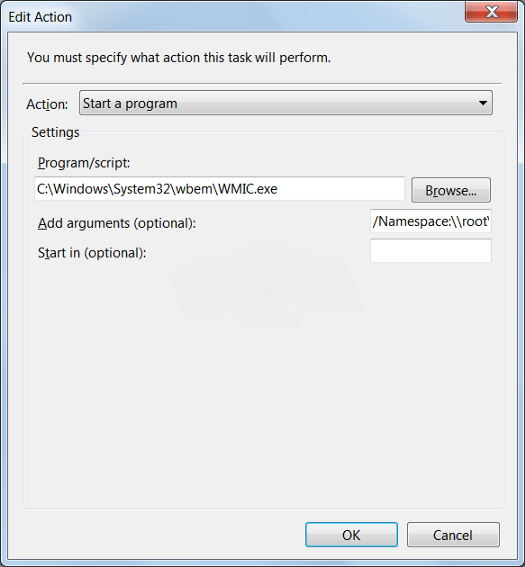

The information provided in this site is for educational purposes regarding pentesting. The author of the site will not be held any responsibility for any misuse of the information from this site.
Introduction
vssadmin.exe is an internal process-related with Microsoft® Windows® Operating System from Microsoft Corporation”.
Vssadmin is a default Windows process that controls volume shadow duplicates of the documents on a given PC. These shadow copies are regularly utilized as a recovery point, and they can be utilized to reestablish or return the file to a past state if they are destroyed or lost due to some reasons. Vssadmin is usually utilized by the backup utility and system admins.
As many malware authors provoke an attempt to delete them so that their victims can’t restore file access by restoring to the shadow copies. thus interacting with vssadmin should require administrative privileges only.
Windows will always attempt to make new Shadow Volume snapshot of your C: drive all 365 days. Since the standard save location for files is on the C: drive your reports will be backed up also. Although this shouldn’t be viewed as a normal backup strategy, it provides an additional object if you have to restore changed or erased record. Tragically, the authors of Ransomware know about Shadow Volume Copies and structure their infection so they erase all Shadow Volume Copies when the ransomware targets your PC. This is a process used to disable the utilization of Shadow Volumes to recover encrypted records.
There are a few techniques that the malware authors use to delete the Shadow Volume Copies, but the most frequent way is vssadmin.exe Delete Shadows /All /Quiet command. This will run the vssadmin.exe utility and it will delete all of the Shadow Volume Copies present on the computer. As this utility requires Administrative privileges to execute, some ransomware will inject themselves into processes that are running as an Administrator to avoid any detection and maintain its persistence.
As vssadmin.exe is not a tool that is routinely utilized by an administrator, it is strongly proposed that it be disallowed it. At that point, if ransomware attempts to use the program to erase your shadow volume or shadow copies, it will fail and you will have the option to utilize them to recover your files. this is not full proof against ransomware infection but it will somehow support to withstand against it.
Automating the restore point creation process
The one drawback to renaming vssadmin.exe is that it has been found that the program is utilized by Windows when it performs scheduled restore event. so we can create a restore point that gives a Windows Management Interface Command instruction that can make the recovery point for the system. This Windows Management Interface Command (WMIC) don’t require any support from vssadmin and can be utilized to make restore points every day. It can be utilized as shown below
Wmic.exe /Namespace:\\root\default Path SystemRestore Call CreateRestorePoint "%DATE%", 100, 7
While making the new scheduled task follow the steps
step 1) create a new task
step 2) In the General tab ensure Run whether the user is logged on or not and to Run with highest privileges as shown in the image below.

Then in the Triggers tab, set it to run according to you. In the below-specified figure, it is set to execute every 2 days, but it can be set according to your needs.

Click on the New button and then enter the below instructions
C:\Windows\System32\wbem\WMIC.exe into the Program/Script field
In the Add arguments field, enter /Namespace:\\root\default Path SystemRestore Call CreateRestorePoint “%DATE%”, 100, 7. in the below image you can view the outcome

The vssadmin can also be used to detect malware
The command line parameter — vssadmin.exe Delete Shadows provide us with an incredible chance to detect ransomware. This presence of malware, searching for vssadmin control is a dependable strategy for recognizing other ransomware like Robinhood and progressively modern dangers like Ryuk. This is common to the point that Mitre has included it as a strategy for ATT&CK
Conclusion
VSSAdmin.exe is a utility that needs special attention and needs to be managed accordingly in such a way that it can be used to safeguard the system and manage the snapshots of the system to utilize the savepoint utility